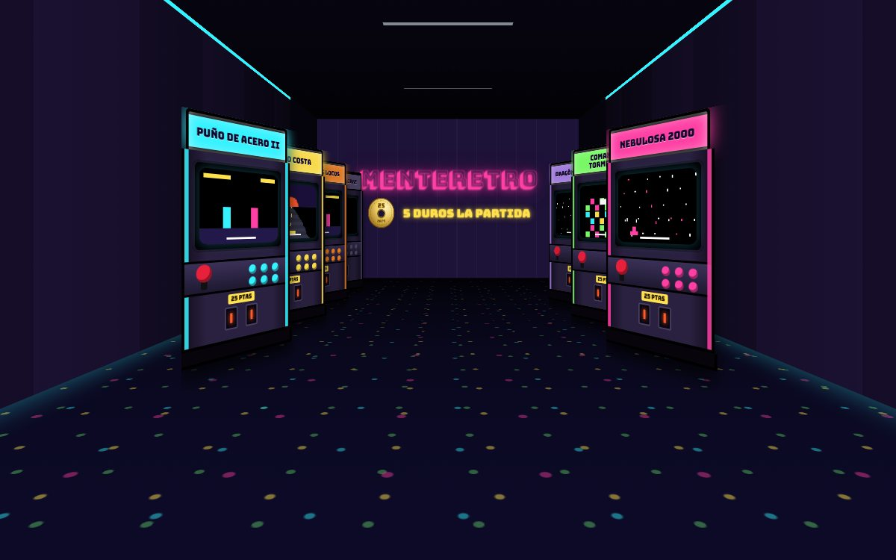

Un salón de barrio, como los de antes
MenteRetro es un salón recreativo de los 90 que funciona en el navegador. Entras por la persiana, recorres el pasillo entre máquinas con la marquesina encendida y eliges a cuál jugar. Nada de listas ni menús: aquí se juega como en el salón de toda la vida.

Cómo funciona
Monta tus máquinas
Cada salón es de quien lo monta. Le pones nombre a cada máquina, eliges el color del mueble y cargas tu propio juego. Todo se queda guardado en tu navegador, y puedes pasar el salón a otro ordenador con una copia.
Monedas de 5 duros
Llevas un monedero con duros, monedas de 25 y de 100 pelas. La partida vale 5 duros: tocas la moneda, la ves entrar por la ranura y te da el crédito. Si echas un duro suelto, la máquina te lo devuelve, como pasaba entonces. Si te quedas sin pelas, siempre puedes pedir 100 en casa.
Récords con iniciales
Al terminar la partida pones tus tres iniciales y tus puntos, y se guarda una foto de la pantalla como prueba. Cada máquina enseña su tabla de récords en el pasillo, alternando con la demo.
Dobles con un amigo, cada uno en su casa
Empiezas la partida, pulsas Invitar a dobles y te sale un código de 6 letras. Tu amigo lo mete desde su móvil u ordenador y entra como jugador 2, con sus propias monedas. No necesita tener el juego ni instalar nada.
En el móvil, como una app
La partida se pone a pantalla completa con controles táctiles, y puedes instalar MenteRetro en la pantalla de inicio para abrirlo como una aplicación más.
Preguntas frecuentes
¿Es gratis?
Sí. No tiene anuncios ni registro. Las monedas son parte del juego y no se compran con dinero real.
¿Trae juegos incluidos?
No. MenteRetro no aloja ni enlaza juegos. Cada persona monta sus máquinas con sus propios archivos, que se guardan solo en su navegador. Si tienes cartuchos, con un lector USB puedes sacar la copia de tus propios juegos.
¿Cómo se juega a dobles?
Quien tiene la máquina empieza la partida y pulsa Invitar a dobles. El amigo mete el código en Unirse a dobles y juega como jugador 2. La imagen viaja directamente entre los dos navegadores.
¿Funciona en el móvil?
Sí, en Android y en iPhone. En iPhone, para quitar las barras del navegador, añade la web a la pantalla de inicio desde el botón de compartir de Safari.
¿Puedo pasar mi salón a otro ordenador?
Sí. En Copia del salón se guarda un archivo con tus máquinas, récords y monedero, y lo cargas en el otro ordenador.